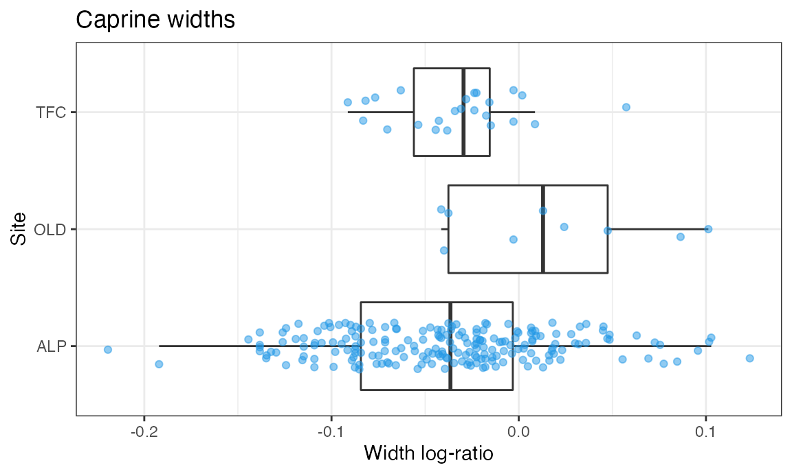
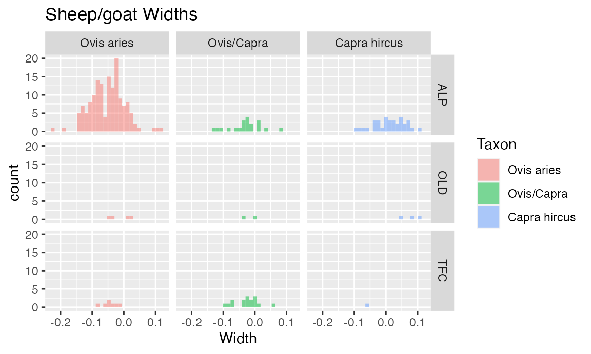

zoolog:
Zooarcheological Analysis with Log-Ratios
Jose M Pozo, Silvia Valenzuela-Lamas, Angela Trentacoste, Ariadna Nieto-Espinet and Silvia Guimarães Chiarelli
2021-02-10
Source:vignettes/index.Rmd
index.RmdIntroduction
The package zoolog includes functions and reference data to generate and manipulate log-ratios (also known as log size index (LSI) values) from measurements obtained on zooarchaeological material. Log ratios are used to compare the relative (rather than the absolute) dimensions of animals from archaeological contexts (Meadow 1999). Essentially, the method compares archaeological measurements to a standard, producing a value that indicates how much larger or smaller the archaeological specimen is compared to that standard. zoolog is also able to seamlessly integrate data and references with heterogeneous nomenclature, which is internally managed by a zoolog thesaurus.
The methods included in the package were first developed in the framework of the ERC-Starting Grant 716298 ZooMWest (PI S. Valenzuela-Lamas), and were first used in the paper (Trentacoste, Nieto-Espinet, and Valenzuela-Lamas 2018). They are based on the techniques proposed by Simpson (1941) and Simpson, Roe, and Lewontin (1960), which calculates log size index (LSI) values as: \[ \mbox{LSI} = \log x - \log x_{\text{ref}} = \log(x/x_\text{ref}), \] where \(x\) is the considered measure value and \(x_\text{ref}\) is the corresponding reference value.
Several different sets of standard reference values are included in the package. These standards include several published and widely used biometric datasets (e.g. Davis (1996), Albarella and Payne (2005)) as well as other less known standards. These references, as well as the data example provided with the package, are based on the measures and measure abbreviations defined in Von den Driesch (1976) and Davis (1992).
In general, zooarcheological datasets are composed of skeletal remains representing many different anatomical body parts. In investigation of animal size, the analysis of measurements from a given anatomical element provides the best control for the variables affecting size and shape and, as such, it is the preferable option. Unfortunately, this approach is not always viable due to low sample sizes in some archaeological assemblages. This problem can be mitigated by calculating the LSI values for measurements with respect to a reference, which provides a means of aggregating biometric information from different body parts. The resulting log ratios can be compared and statistically analysed under reasonable conditions (Albarella 2002). However, length and width measurements of different anatomical elements still should not be directly compared or aggregated for statistical analysis.
The package includes a zoolog thesaurus to facilitate its usage by research teams across the globe, and working in different languages and with different recording traditions. The thesaurus enables the zoolog package to recognises many different names for taxa and skeletal elements (e.g. “Bos taurus”, “Bos”, “BT”, “bovino”, “bota”). Consequently, there is no need to use a particular, standardised recording code for the names of different taxa or elements.
Acknowledgements
We are particularly grateful to Sabine Deschler-Erb and Barbara Stopp, from the University of Basel (Switzerland) for making the reference values of several specimens available through the ICAZ Roman Period Working Group, which have been included here with their permission. We also thank Francesca Slim and Dimitris Filioglou from the University of Groningen for providing additional reference sets.
The thesaurus has benefited from the contributions from Moussab Besso, Canan Cakirlar, Jwana Chahoud, Jacopo De Grossi Mazzorin, Sabine Deschler-Erb, Dimitrios Filioglou, Armelle Gardeisen, Sierra Harding, Pilar Iborra, Michael MacKinnon, Nimrod Marom, Claudia Minniti, Francesca Slim, Barbara Stopp, and Emmanuelle Vila.
We are grateful to all of them for their contributions, comments, and help. In addition, users are encouraged to contribute to the thesaurus and other references so that zoolog can be expanded and adapted to any database.
Installation
You can install the released version of zoolog from CRAN with:
install.packages("zoolog")And the development version from GitHub with:
install.packages("devtools")
devtools::install_github("josempozo/zoolog@HEAD", build_vignettes = TRUE, force = TRUE)Reference standards
The package zoolog includes several osteometrical references. Currently, the references include reference values for the main domesticates and their agriotypes (Bos, Ovis, Capra, Sus), and red deer (Cervus elaphus). These are drawn from a variety of publications and resources (see below). In addition, the user can consider other references, or the provided references can be extended and updated integrating newer research data. Submission of extended/improved references is encouraged. Please, contact the maintainer through the provided email address to make the new reference fully accessible within the package.
The predefined reference sets included in zoolog are provided in the named list reference, currently comprising the following 4 sets:
library(zoolog)
str(reference, max.level = 1)
#> List of 4
#> $ NietoDavisAlbarella:'data.frame': 102 obs. of 4 variables:
#> $ Basel :'data.frame': 176 obs. of 4 variables:
#> $ Combi :'data.frame': 254 obs. of 4 variables:
#> $ Groningen :'data.frame': 246 obs. of 4 variables:The reference set reference$Combi is the default reference for computing the log ratios, since it includes the most comprehensive reference for each species.
The package includes also a referencesDatabase collecting the taxon-specific reference standards from all the considered resources. Each reference set is composed of a different combination of taxon-specific standards selected from this referencesDatabase. The selection is defined by the data frame referenceSets:
| Bos taurus | Bos primigenius | Ovis aries | Ovis orientalis | Capra hircus | Capra aegagrus | Sus domesticus | Sus scrofa | Cervus elaphus | |
|---|---|---|---|---|---|---|---|---|---|
| NietoDavisAlbarella | Nieto | Davis | Albarella | ||||||
| Basel | Basel | Basel | Basel | Basel | Basel | ||||
| Combi | Nieto | Clutton | Clutton | Basel | Basel | ||||
| Groningen | Degerbol | Uerpmann | Uerpmann | Hongo |
A detailed description of the reference data, including its structure, properties, and considered resources can be found in the ReferencesDatabase help page.
Thesaurus
A thesaurus set is defined in order to make the package compatible with the different recording conventions and languages used by authors of zooarcheological datasets. This enables the function LogRatios to match values in the user’s dataset with the corresponding ones in the reference standard, regardless of differences in nomenclature or naming conventions, as long as both terms are included in the relevant thesaurus. The thesaurus also allows the user to standardize the nomenclature of the dataset if desired.
The user can also use other thesaurus sets or modify the provided one. In this latter case, we encourage the user to contact the maintainer at the provided email address so that the additions can be incorporated into the new versions of the package.
Currently, the zoolog thesaurus set includes four thesauri:
- identifierThesaurus
- For the column names that identify the variables used in computing the log ratios. It includes the categories Taxon, Element, Measure, and Standard. Each category provides a series of equivalent names. For instance, Taxon includes the options Taxon, TAX, species, animal, Specie, GenusSpecies, Especie. This thesaurus is case, accent, and punctuation insensitive, so that, for instance, “Especie” is equivalent to “ESPECIE” or “Espècie”.
- taxonThesaurus
- For the names of the different taxa when recording animal bones. The current categories are Bos taurus, Bos primigenius, Ovis aries, Ovis orientalis, Capra hircus, Capra aegagrus, Ovis/Capra, Sus domesticus, Sus scrofa, Cervus elaphus, each with different equivalent names. This thesaurus is case, accent, and punctuation insensitive, so that, for instance, “Bos” is equivalent to “bos”, “Bos.”, or “Bos ”.
- elementThesaurus
- Names of anatomical elements when recording animal bones. It currently includes 39 categories (scapula, humerus, radius, …), each with different equivalent names. This thesaurus is case, accent, and punctuation insensitive.
- measureThesaurus
- Names of the measurements. While the English abbreviations from (Von den Driesch 1976) and (Davis 1992) are widely used in published literature, this thesaurus enables other nomenclatures (e.g. original German abbreviations in (Von den Driesch 1976)) to be included. This thesaurus is case sensitive.
Functions
The full list of functions is available under the zoolog help page. We list them here sorted by their prominence for a typical user, and grouped by functionality:
- LogRatios
- It computes the log ratios of the measurements in a dataset relative to standard reference values. By default
reference$Combiis used. The function includes the option ‘joinCategories’ allowing several taxa (typically Ovis, Capra, and unknown Ovis/Capra) to be considered together with the same reference taxon. - Note that without using ‘joinCategories’ any taxa not part of the selected reference set will be excluded. For instance, if using
reference$NietoDavisAlbarella, log ratios for goats will not be calculated unless ‘joinCategories’ is set to indicate that the Ovis aries standard should also be applied to goats. - CondenseLogs
- It condenses the calculated log ratio values into a reduced number of features by grouping several measure log ratios and selecting or calculating a representative feature value. By default the selected groups represent a single dimension, i.e. Length and Width. Only one feature is extracted per group. Currently, two methods are possible: “priority” (default) or “average”.
- This operation is motivated by two circumstances. First, not all measurements are available for every bone specimen, which obstructs their direct comparison and statistical analysis. Second, several measurements can be strongly correlated (e.g. SD and Bd both represent bone width). Thus, considering them as independent would produce an over-representation of bone remains with multiple measurements per axis. Condensing each group of measurements into a single feature (e.g. one measure per axis) alleviates both problems.
- The default method (“priority”), selects the first available log ratio in each group. Besides,
CondenseLogsemploys the following by-default group and prioritization introduced in (Trentacoste, Nieto-Espinet, and Valenzuela-Lamas 2018): Length, considers in order of priority GL, GLl, HTC, and GLm. Width, considers in order of priority Bd, BT, Bp, SD, Bfd, and Bfp. This order maximises the robustness and reliability of the measurements, as priority is given to the most abundant, more replicable, and less age dependent measurements. But users can set their own features with any group of measures and priorities. The method ‘average’ extracts the mean per group, ignoring the non-available log ratios. - RemoveNACases
- It removes the cases (table rows) for which all measurements of interest are non-available (NA). A particular list of measurement names can be explicitly provided or selected by a common initial pattern (e.g. prefix). The default setting removes the rows with no available log ratios to facilitate subsequent analysis of the data.
- InCategory
- It checks if an element belongs to a category according to a thesarus. It is similar to base::is.element, returning a logical vector indicating if each element in a given vector is included in a given set. But
InCategorychecks for equality assuming the equivalencies defined in the given thesaurus. It is intended for the user to easily select a subset of data without having to standardize the analysed dataset. - Nomenclature standardization
-
This includes two functions enabling the user to map data with heterogeneous nomenclature into a standard one as defined in a thesaurus:
-
StandardizeNomenclaturestandardizes a character vector according to a given thesaurus. -
StandardizeDataSetstandardizes column names and values of a data frame according to a thesaurus set.
-
- AssembleReference
- It allows the user to build new references assembling the desired taxon-specific references included in the zoolog
referencesDataSetor in any other provided by the user. - Thesaurus readers and writers
- This includes functions to read and write a single thesaurus (
ReadThesaurusandWriteThesaurus) and a thesaurus set (ReadThesaurusSetandWriteThesaurusSet). - Thesaurus management
-
This includes functions to modify and check thesauri:
-
NewThesaurusgenerates an empty thesarus. -
AddToThesaurusadds new names and categories to an existing thesaurus. -
RemoveRepeatedNamescleans a thesarus from any repeated names on any category. -
ThesaurusAmbiguitychecks if there are names included in more than one category in a thesaurus.
-
Examples
The following examples are designed to be read and run sequentially. They represent a possible pipeline, meaningful for the processing and analysis of a dataset. Only occasionally, a small diversion is included to illustrate some alternatives.
Reading data and calculating log ratios
This example reads a dataset from a file in csv format and computes the log-ratios. Then, the cases with no available log-ratios are removed. Finally, the resulting dataset is saved in a file in csv format.
The first step is to set the local path to the folder where you have the dataset to be analysed (this is typically a comma-separated value (csv) file). Here the example dataset from (Valenzuela-Lamas 2008) included in the package is used:
library(zoolog)
dataFile <- system.file("extdata", "dataValenzuelaLamas2008.csv.gz",
package = "zoolog")
data = read.csv2(dataFile,
quote = "\"", header = TRUE, na.strings = "",
fileEncoding = "UTF-8",
stringsAsFactors = TRUE)
knitr::kable(head(data)[, -c(6:20,32:64)])| Site | N.inv | UE | Especie | Os | GL | Bp | Dp | SD | DD | Bd | Dd | BT | GLc | BFd | Dl |
|---|---|---|---|---|---|---|---|---|---|---|---|---|---|---|---|
| ALP | 4918 | 10364 | bota | 1 fal | 54.0 | 31.3 | 30.6 | 28.1 | 26.3 | 27.5 | 20.0 | ||||
| ALP | 4919 | 10364 | bota | 1 fal | 54.5 | 27.9 | 31.8 | 26.0 | 22.8 | 25.3 | 19.5 | ||||
| ALP | 3453 | 10410 | ovar | 1fal ant | 27.1 | 9.9 | 12.3 | 17.9 | 9.0 | 9.0 | |||||
| ALP | 3455 | 10410 | ovar | 1fal ant | 27.6 | 9.6 | 12.2 | 7.6 | 8.9 | 8.3 | |||||
| ALP | 4245 | 7036 | cahi | hum | 128.3 | 12.9 | 27.4 | 26.6 | 23.6 | ||||||
| ALP | 4674 | 10227 | cahi | hum | 26.0 | 25.7 | 22.3 |
To enhance the visibility, we have shown only the most relevant columns.
We now calculate the log-ratios using the function LogRatios. Only measurements that have an associated standard will be included in this calculation. The log values will appear as new columns with the prefix ‘log’ following the original columns with the raw measurements:
| Site | N.inv | UE | Especie | Os | GL | Bp | Dp | SD | DD | Bd | Dd | BT | GLc | BFd | Dl | logGL | logBp | logDp | logSD | logBd | logDd | logBT | logGLc | logBFd | logDl | logGB | logSLC | logGLP | logBG | logLG | logDPA | logBPC | logLA | logLAR | logSH | logL | logH |
|---|---|---|---|---|---|---|---|---|---|---|---|---|---|---|---|---|---|---|---|---|---|---|---|---|---|---|---|---|---|---|---|---|---|---|---|---|---|
| ALP | 4918 | 10364 | bota | 1 fal | 54.0 | 31.3 | 30.6 | 28.1 | 26.3 | 27.5 | 20.0 | ||||||||||||||||||||||||||
| ALP | 4919 | 10364 | bota | 1 fal | 54.5 | 27.9 | 31.8 | 26.0 | 22.8 | 25.3 | 19.5 | ||||||||||||||||||||||||||
| ALP | 3453 | 10410 | ovar | 1fal ant | 27.1 | 9.9 | 12.3 | 17.9 | 9.0 | 9.0 | -0.1078605 | -0.0799118 | -0.0726593 | 0.2629585 | -0.0891198 | ||||||||||||||||||||||
| ALP | 3455 | 10410 | ovar | 1fal ant | 27.6 | 9.6 | 12.2 | 7.6 | 8.9 | 8.3 | -0.0999207 | -0.0932757 | -0.0762046 | -0.1090810 | -0.1242842 | ||||||||||||||||||||||
| ALP | 4245 | 7036 | cahi | hum | 128.3 | 12.9 | 27.4 | 26.6 | 23.6 | 0.4016796 | -0.2116296 | -0.1513050 | -0.0678788 | ||||||||||||||||||||||||
| ALP | 4674 | 10227 | cahi | hum | 26.0 | 25.7 | 22.3 | -0.1740822 | -0.0828273 |
Dealing with lazy datasets
If we observe the example dataset more carefully, we can see that the measures recorded for the astragali presents a deviation from the measure definitions in (Von den Driesch 1976; Davis 1992). To see this, we can select the cases where the element is an astragalus. The function InCategory allows us to select them with the help of the thesaurus without requiring to know the terms actually used:
AScases <- InCategory(dataWithLog$Os, "astragalus", zoologThesaurus$element)
knitr::kable(head(dataWithLog[AScases, -c(6:20,32:64)]))| Site | N.inv | UE | Especie | Os | GL | Bp | Dp | SD | DD | Bd | Dd | BT | GLc | BFd | Dl | logGL | logBp | logDp | logSD | logBd | logDd | logBT | logGLc | logBFd | logDl | logGB | logSLC | logGLP | logBG | logLG | logDPA | logBPC | logLA | logLAR | logSH | logL | logH | |
|---|---|---|---|---|---|---|---|---|---|---|---|---|---|---|---|---|---|---|---|---|---|---|---|---|---|---|---|---|---|---|---|---|---|---|---|---|---|---|
| 7503 | ALP | 4410 | 8001 | bota | talus | 58.4 | 31.5 | 31.4 | -0.0927541 | |||||||||||||||||||||||||||||
| 7504 | ALP | 1181 | 7011 | bota | talus | 57.7 | 35.7 | 32.8 | -0.0383964 | |||||||||||||||||||||||||||||
| 7505 | ALP | 1180 | 7011 | bota | talus | 58.8 | ||||||||||||||||||||||||||||||||
| 7506 | ALP | 1136 | 7039 | bota | talus | 58.9 | 39.3 | 34.4 | 0.0033279 | |||||||||||||||||||||||||||||
| 7507 | ALP | 1678 | 7092 | bota | talus | 59.4 | 39.8 | 34.9 | 0.0088185 | |||||||||||||||||||||||||||||
| 7508 | TFC | 617 | 1061 | bota | talus | 56.6 | 34.0 | 32.3 | -0.0595857 |
According to the mesure definitions, astragali should have no GL measurement, but GLl. However, in the example dataset the GLl measurements have been recorded merged in the GL column. This is a data-entry simplification that is used by some researchers. It is possible because GLl is only relevant for the astragalus, while GL is not applicable to it. Thus, there cannot be any ambiguity between both measures since they can be identified by the bone element. However, since the zoolog reference uses the proper measure name for each bone element (GLl for the astragalus), the reference measure has not been correctly identified. Consequently, the log ratio logGL has NA values and the column logGLl does not exists.
The optional parameter mergedMeasures facilitates the processing of this type of simplified datasets. For the example data, we can use
GLandGLl <- list(c("GL", "GLl"))
dataWithLog <- LogRatios(data, mergedMeasures = GLandGLl)
knitr::kable(head(dataWithLog[AScases, -c(6:20,32:64)]))| Site | N.inv | UE | Especie | Os | GL | Bp | Dp | SD | DD | Bd | Dd | BT | GLc | BFd | Dl | logGL | logBp | logDp | logSD | logBd | logDd | logBT | logGLc | logBFd | logDl | logGB | logSLC | logGLP | logBG | logLG | logDPA | logBPC | logLA | logLAR | logSH | logL | logH | |
|---|---|---|---|---|---|---|---|---|---|---|---|---|---|---|---|---|---|---|---|---|---|---|---|---|---|---|---|---|---|---|---|---|---|---|---|---|---|---|
| 7503 | ALP | 4410 | 8001 | bota | talus | 58.4 | 31.5 | 31.4 | -0.0259788 | -0.0927541 | ||||||||||||||||||||||||||||
| 7504 | ALP | 1181 | 7011 | bota | talus | 57.7 | 35.7 | 32.8 | -0.0312159 | -0.0383964 | ||||||||||||||||||||||||||||
| 7505 | ALP | 1180 | 7011 | bota | talus | 58.8 | -0.0230144 | |||||||||||||||||||||||||||||||
| 7506 | ALP | 1136 | 7039 | bota | talus | 58.9 | 39.3 | 34.4 | -0.0222764 | 0.0033279 | ||||||||||||||||||||||||||||
| 7507 | ALP | 1678 | 7092 | bota | talus | 59.4 | 39.8 | 34.9 | -0.0186052 | 0.0088185 | ||||||||||||||||||||||||||||
| 7508 | TFC | 617 | 1061 | bota | talus | 56.6 | 34.0 | 32.3 | -0.0395753 | -0.0595857 |
This option allows us to automatically select, for each bone element, the corresponding measure present in the reference. Observe that now the log ratios have been computed and assigned to the column logGL.
Using the same ovis reference for all caprines
We could be interested in obtaining the log ratios of all caprines, including Ovis aries, Capra hircus, and undetermined Ovis/Capra, with respect to the reference for Ovis aries. This can be set using the argument joinCategories.
caprineCategory <- list(ovar = c("sheep", "capra", "oc"))
dataWithLog=LogRatios(data, joinCategories = caprineCategory, mergedMeasures = GLandGLl)
knitr::kable(head(dataWithLog)[, -c(6:20,32:64)])| Site | N.inv | UE | Especie | Os | GL | Bp | Dp | SD | DD | Bd | Dd | BT | GLc | BFd | Dl | logGL | logBp | logDp | logSD | logBd | logDd | logBT | logGLc | logBFd | logDl | logGB | logSLC | logGLP | logBG | logLG | logDPA | logBPC | logLA | logLAR | logSH | logL | logH |
|---|---|---|---|---|---|---|---|---|---|---|---|---|---|---|---|---|---|---|---|---|---|---|---|---|---|---|---|---|---|---|---|---|---|---|---|---|---|
| ALP | 4918 | 10364 | bota | 1 fal | 54.0 | 31.3 | 30.6 | 28.1 | 26.3 | 27.5 | 20.0 | ||||||||||||||||||||||||||
| ALP | 4919 | 10364 | bota | 1 fal | 54.5 | 27.9 | 31.8 | 26.0 | 22.8 | 25.3 | 19.5 | ||||||||||||||||||||||||||
| ALP | 3453 | 10410 | ovar | 1fal ant | 27.1 | 9.9 | 12.3 | 17.9 | 9.0 | 9.0 | -0.1078605 | -0.0799118 | -0.0726593 | 0.2629585 | -0.0891198 | ||||||||||||||||||||||
| ALP | 3455 | 10410 | ovar | 1fal ant | 27.6 | 9.6 | 12.2 | 7.6 | 8.9 | 8.3 | -0.0999207 | -0.0932757 | -0.0762046 | -0.1090810 | -0.1242842 | ||||||||||||||||||||||
| ALP | 4245 | 7036 | cahi | hum | 128.3 | 12.9 | 27.4 | 26.6 | 23.6 | 0.5316550 | -0.0299183 | -0.0189191 | 0.0490352 | -0.0627731 | |||||||||||||||||||||||
| ALP | 4674 | 10227 | cahi | hum | 26.0 | 25.7 | 22.3 | -0.0416963 | 0.0340867 | -0.0873803 |
Note that this option does not remove the distinction in the data between the different species, it just indicates that for these taxa the log ratios must be computed from the same reference (ovar).
Pruning the data from cases with no available measure
The cases without log-ratios can be removed to facilitate subsequent analyses:
dataWithLogPruned=RemoveNACases(dataWithLog)
knitr::kable(head(dataWithLogPruned[, -c(6:20,32:64)]))| Site | N.inv | UE | Especie | Os | GL | Bp | Dp | SD | DD | Bd | Dd | BT | GLc | BFd | Dl | logGL | logBp | logDp | logSD | logBd | logDd | logBT | logGLc | logBFd | logDl | logGB | logSLC | logGLP | logBG | logLG | logDPA | logBPC | logLA | logLAR | logSH | logL | logH |
|---|---|---|---|---|---|---|---|---|---|---|---|---|---|---|---|---|---|---|---|---|---|---|---|---|---|---|---|---|---|---|---|---|---|---|---|---|---|
| ALP | 3453 | 10410 | ovar | 1fal ant | 27.1 | 9.9 | 12.3 | 17.9 | 9.0 | 9.0 | -0.1078605 | -0.0799118 | -0.0726593 | 0.2629585 | -0.0891198 | ||||||||||||||||||||||
| ALP | 3455 | 10410 | ovar | 1fal ant | 27.6 | 9.6 | 12.2 | 7.6 | 8.9 | 8.3 | -0.0999207 | -0.0932757 | -0.0762046 | -0.1090810 | -0.1242842 | ||||||||||||||||||||||
| ALP | 4245 | 7036 | cahi | hum | 128.3 | 12.9 | 27.4 | 26.6 | 23.6 | 0.5316550 | -0.0299183 | -0.0189191 | 0.0490352 | -0.0627731 | |||||||||||||||||||||||
| ALP | 4674 | 10227 | cahi | hum | 26.0 | 25.7 | 22.3 | -0.0416963 | 0.0340867 | -0.0873803 | |||||||||||||||||||||||||||
| ALP | 4085 | 10253 | cahi | hum | 27.9 | 27.3 | 23.2 | -0.0110654 | 0.0603162 | -0.0701972 | |||||||||||||||||||||||||||
| TFC | 24 | 407 | ceel | mc | 262.7 | 41.3 | 30.8 | 25.0 | 21.2 | 41.1 | 27.1 | -0.0335411 |
You may want to write the resulting file in the working directory (you need to set it first):
write.csv2(dataWithLogPruned, "myDataWithLogValues.csv",
quote=FALSE, row.names=FALSE, na="",
fileEncoding="UTF-8")Condensing log values
After calculating log ratios using the LogRatios function, many rows in the resultant dataframe (dataWithLog in the example above) may contain multiple log values, i.e. you will have several log values associated with a particular archaeological specimen. When analysing log ratios, it is preferential to avoid overrepresentation of bones with a greater number of measurements and account for each specimen only once. The CondenseLogs function extracts one length and one width value from each row and places these in new Length and Width columns.The ‘priority’ method described in (Trentacoste, Nieto-Espinet, and Valenzuela-Lamas 2018) has been set as default. Nevertheless, other options (e.g. average of all width log values for a given specimen) can be chosen if preferred. In this case, the default option has been used:
dataWithSummary <- CondenseLogs(dataWithLogPruned)
knitr::kable(head(dataWithSummary)[, -c(6:20,32:64,72:86)])| Site | N.inv | UE | Especie | Os | GL | Bp | Dp | SD | DD | Bd | Dd | BT | GLc | BFd | Dl | logGL | logBp | logDp | logSD | logBd | logDd | logBT | Length | Width |
|---|---|---|---|---|---|---|---|---|---|---|---|---|---|---|---|---|---|---|---|---|---|---|---|---|
| ALP | 3453 | 10410 | ovar | 1fal ant | 27.1 | 9.9 | 12.3 | 17.9 | 9.0 | 9.0 | -0.1078605 | -0.0799118 | -0.0726593 | 0.2629585 | -0.0891198 | -0.1078605 | -0.0891198 | |||||||
| ALP | 3455 | 10410 | ovar | 1fal ant | 27.6 | 9.6 | 12.2 | 7.6 | 8.9 | 8.3 | -0.0999207 | -0.0932757 | -0.0762046 | -0.1090810 | -0.1242842 | -0.0999207 | -0.1242842 | |||||||
| ALP | 4245 | 7036 | cahi | hum | 128.3 | 12.9 | 27.4 | 26.6 | 23.6 | 0.5316550 | -0.0299183 | -0.0189191 | 0.0490352 | -0.0627731 | -0.0189191 | |||||||||
| ALP | 4674 | 10227 | cahi | hum | 26.0 | 25.7 | 22.3 | -0.0416963 | 0.0340867 | -0.0873803 | -0.0416963 | |||||||||||||
| ALP | 4085 | 10253 | cahi | hum | 27.9 | 27.3 | 23.2 | -0.0110654 | 0.0603162 | -0.0701972 | -0.0110654 | |||||||||||||
| TFC | 24 | 407 | ceel | mc | 262.7 | 41.3 | 30.8 | 25.0 | 21.2 | 41.1 | 27.1 | -0.0335411 | -0.0335411 |
Standardizing the dataset nomenclature
The integration of the thesaurus functionality facilitates the use of datasets with heterogenous nomenclatures, without further preprocessing. An extensive catalogue of names for equivalent categories has been integrated in the provided thesaurus set zoologThesaurus. These equivalences are internally and silently managed without requiring any action from the user. However, it can be also interesting to explicitly standardize the data to make figures legible to a wider audience. This is especially useful when different nomenclature for the same concept is found in the same dataset, for instance “sheep” and “ovis” for the same taxon or “hum” and “HU” for the bone element.
If we standardize the studied data, we can see that zoologThesaurus will change “ovar” to “Ovis aries”, “hum” to “humerus”, and “Especie” to “Taxon”, for instance.
dataStandardized <- StandardizeDataSet(dataWithSummary)
knitr::kable(head(dataStandardized)[, -c(6:20,32:64,72:86)])| Site | N.inv | UE | Taxon | Element | GL | Bp | Dp | SD | DD | Bd | Dd | BT | GLc | BFd | Dl | logGL | logBp | logDp | logSD | logBd | logDd | logBT | Length | Width |
|---|---|---|---|---|---|---|---|---|---|---|---|---|---|---|---|---|---|---|---|---|---|---|---|---|
| ALP | 3453 | 10410 | Ovis aries | anterior first phalanx | 27.1 | 9.9 | 12.3 | 17.9 | 9.0 | 9.0 | -0.1078605 | -0.0799118 | -0.0726593 | 0.2629585 | -0.0891198 | -0.1078605 | -0.0891198 | |||||||
| ALP | 3455 | 10410 | Ovis aries | anterior first phalanx | 27.6 | 9.6 | 12.2 | 7.6 | 8.9 | 8.3 | -0.0999207 | -0.0932757 | -0.0762046 | -0.1090810 | -0.1242842 | -0.0999207 | -0.1242842 | |||||||
| ALP | 4245 | 7036 | Capra hircus | humerus | 128.3 | 12.9 | 27.4 | 26.6 | 23.6 | 0.5316550 | -0.0299183 | -0.0189191 | 0.0490352 | -0.0627731 | -0.0189191 | |||||||||
| ALP | 4674 | 10227 | Capra hircus | humerus | 26.0 | 25.7 | 22.3 | -0.0416963 | 0.0340867 | -0.0873803 | -0.0416963 | |||||||||||||
| ALP | 4085 | 10253 | Capra hircus | humerus | 27.9 | 27.3 | 23.2 | -0.0110654 | 0.0603162 | -0.0701972 | -0.0110654 | |||||||||||||
| TFC | 24 | 407 | Cervus elaphus | metacarpus | 262.7 | 41.3 | 30.8 | 25.0 | 21.2 | 41.1 | 27.1 | -0.0335411 | -0.0335411 |
Selecting only caprines
We may be interested in selecting all caprine elements. This can be done even without standardizing the data using the function InCategory:
dataOC <- subset(dataWithSummary, InCategory(Especie,
c("sheep", "capra", "oc"),
zoologThesaurus$taxon))
knitr::kable(head(dataOC)[, -c(6:20,32:64)])| Site | N.inv | UE | Especie | Os | GL | Bp | Dp | SD | DD | Bd | Dd | BT | GLc | BFd | Dl | logGL | logBp | logDp | logSD | logBd | logDd | logBT | logGLc | logBFd | logDl | logGB | logSLC | logGLP | logBG | logLG | logDPA | logBPC | logLA | logLAR | logSH | logL | logH | Length | Width | |
|---|---|---|---|---|---|---|---|---|---|---|---|---|---|---|---|---|---|---|---|---|---|---|---|---|---|---|---|---|---|---|---|---|---|---|---|---|---|---|---|---|
| 1 | ALP | 3453 | 10410 | ovar | 1fal ant | 27.1 | 9.9 | 12.3 | 17.9 | 9.0 | 9.0 | -0.1078605 | -0.0799118 | -0.0726593 | 0.2629585 | -0.0891198 | -0.1078605 | -0.0891198 | ||||||||||||||||||||||
| 2 | ALP | 3455 | 10410 | ovar | 1fal ant | 27.6 | 9.6 | 12.2 | 7.6 | 8.9 | 8.3 | -0.0999207 | -0.0932757 | -0.0762046 | -0.1090810 | -0.1242842 | -0.0999207 | -0.1242842 | ||||||||||||||||||||||
| 3 | ALP | 4245 | 7036 | cahi | hum | 128.3 | 12.9 | 27.4 | 26.6 | 23.6 | 0.5316550 | -0.0299183 | -0.0189191 | 0.0490352 | -0.0627731 | -0.0189191 | ||||||||||||||||||||||||
| 4 | ALP | 4674 | 10227 | cahi | hum | 26.0 | 25.7 | 22.3 | -0.0416963 | 0.0340867 | -0.0873803 | -0.0416963 | ||||||||||||||||||||||||||||
| 5 | ALP | 4085 | 10253 | cahi | hum | 27.9 | 27.3 | 23.2 | -0.0110654 | 0.0603162 | -0.0701972 | -0.0110654 | ||||||||||||||||||||||||||||
| 7 | ALP | 3524 | 10122 | ovar | 1fal ant | 27.7 | 9.2 | 11.5 | 7.5 | 9.4 | 8.1 | -0.0983500 | -0.1117591 | -0.1018666 | -0.1148333 | -0.1348773 | -0.0983500 | -0.1348773 |
Observe that no standardization is performed in the output subset. To standardize the subset data, StandardizeDataSet can be applied either before or after the subsetting.
dataOCStandardized <- StandardizeDataSet(dataOC)
knitr::kable(head(dataOCStandardized)[, -c(6:20,32:64)])| Site | N.inv | UE | Taxon | Element | GL | Bp | Dp | SD | DD | Bd | Dd | BT | GLc | BFd | Dl | logGL | logBp | logDp | logSD | logBd | logDd | logBT | logGLc | logBFd | logDl | logGB | logSLC | logGLP | logBG | logLG | logDPA | logBPC | logLA | logLAR | logSH | logL | logH | Length | Width | |
|---|---|---|---|---|---|---|---|---|---|---|---|---|---|---|---|---|---|---|---|---|---|---|---|---|---|---|---|---|---|---|---|---|---|---|---|---|---|---|---|---|
| 1 | ALP | 3453 | 10410 | Ovis aries | anterior first phalanx | 27.1 | 9.9 | 12.3 | 17.9 | 9.0 | 9.0 | -0.1078605 | -0.0799118 | -0.0726593 | 0.2629585 | -0.0891198 | -0.1078605 | -0.0891198 | ||||||||||||||||||||||
| 2 | ALP | 3455 | 10410 | Ovis aries | anterior first phalanx | 27.6 | 9.6 | 12.2 | 7.6 | 8.9 | 8.3 | -0.0999207 | -0.0932757 | -0.0762046 | -0.1090810 | -0.1242842 | -0.0999207 | -0.1242842 | ||||||||||||||||||||||
| 3 | ALP | 4245 | 7036 | Capra hircus | humerus | 128.3 | 12.9 | 27.4 | 26.6 | 23.6 | 0.5316550 | -0.0299183 | -0.0189191 | 0.0490352 | -0.0627731 | -0.0189191 | ||||||||||||||||||||||||
| 4 | ALP | 4674 | 10227 | Capra hircus | humerus | 26.0 | 25.7 | 22.3 | -0.0416963 | 0.0340867 | -0.0873803 | -0.0416963 | ||||||||||||||||||||||||||||
| 5 | ALP | 4085 | 10253 | Capra hircus | humerus | 27.9 | 27.3 | 23.2 | -0.0110654 | 0.0603162 | -0.0701972 | -0.0110654 | ||||||||||||||||||||||||||||
| 7 | ALP | 3524 | 10122 | Ovis aries | anterior first phalanx | 27.7 | 9.2 | 11.5 | 7.5 | 9.4 | 8.1 | -0.0983500 | -0.1117591 | -0.1018666 | -0.1148333 | -0.1348773 | -0.0983500 | -0.1348773 |
Observe also that the distinction between Ovis aries, Capra hircus, and Ovis/Capra has not been removed from the data.
If we were interested only in one summary measure, Width or Length, we could retain the cases including this measure:
dataOCWithWidth <- RemoveNACases(dataOCStandardized, measureNames = "Width")
dataOCWithLength <- RemoveNACases(dataOCStandardized, measureNames = "Length")which gives respectively 237 (=nrow(dataOCWithWidth)) and 149 (=nrow(dataOCWithLength)) cases.
Different plots for data visualisation
Condensed log values can be visualised as histograms and box plots using ggplot (Wickham 2011). Here we will look at some examples of plotting values from caprines.
Horizontal Boxplot with dots grouped by site
For the example plots we will use the package ggplot2.
We can now create a boxplot for the widths:
ggplot(dataOCStandardized, aes(x = Site, y = Width)) +
geom_boxplot(outlier.shape = NA, na.rm = TRUE) +
geom_jitter(width = 0.2, height = 0, alpha = 1/2, color = 4, na.rm = TRUE) +
theme_bw() +
ggtitle("Caprine widths") +
ylab("Width log-ratio") +
coord_flip()
And another boxplot for the lengths:
ggplot(dataOCStandardized, aes(x = Site, y = Length)) +
geom_boxplot(outlier.shape = NA, na.rm = TRUE) +
geom_jitter(width = 0.2, height = 0, alpha = 1/2, color = 4, na.rm = TRUE) +
theme_bw() +
ggtitle("Caprine lengths") +
ylab("Length log-ratio") +
coord_flip()Histograms grouped by site
We may choose to plot the width data as a histogram:
ggplot(dataOCStandardized, aes(Width)) +
geom_histogram(bins = 30, na.rm = TRUE) +
ggtitle("Caprine widths") +
xlab("Width log-ratio") +
facet_grid(Site ~.) +
theme_bw() +
theme(panel.grid.major.y = element_blank(),
panel.grid.minor.y = element_blank()) +
theme(plot.title = element_text(hjust = 0.5, size = 14),
axis.title.x = element_text(size = 10),
axis.title.y = element_text(size = 10),
axis.text = element_text(size = 10) ) +
scale_y_continuous(breaks = c(0, 10, 20, 30))
Vertical boxplot with dots grouped by taxon and site
Here we reorder the factor levels of dataOCStandardized$Taxon to make the order of the boxplots more intuitive.
levels0 <- levels(dataOCStandardized$Taxon)
levels0
#> [1] "Capra hircus" "Ovis aries" "Ovis/Capra"
dataOCStandardized$Taxon <- factor(dataOCStandardized$Taxon,
levels = levels0[c(2,3,1)])
levels(dataOCStandardized$Taxon)
#> [1] "Ovis aries" "Ovis/Capra" "Capra hircus"and assign specific colours for each category:
Ocolour <- c("#A2A475", "#D8B70A", "#81A88D")
ggplot(dataOCStandardized, aes(x=Site, y=Width)) +
geom_boxplot(aes(fill=Taxon),
notch = TRUE, alpha = 0, lwd = 0.377, outlier.alpha = 0,
width = 0.5, na.rm = TRUE,
position = position_dodge(0.75),
show.legend = FALSE) +
geom_point(aes(colour = Taxon, shape = Taxon),
alpha = 0.7, size = 0.8,
position = position_jitterdodge(jitter.width = 0.3),
na.rm = TRUE) +
scale_colour_manual(values=Ocolour) +
scale_shape_manual(values=c(15, 18, 16)) +
theme_bw(base_size = 8) +
ylab("LSI value") +
ggtitle("Sheep/goat LSI width values") 
Histograms grouped by taxon and site
TaxonSiteWidthHist <- ggplot(dataOCStandardized, aes(Width, fill = Taxon)) +
geom_histogram(bins = 30, alpha = 0.5, position = "identity") +
ggtitle("Sheep/goat Widths") + facet_grid(Site ~ Taxon)
TaxonSiteWidthHist
TaxonSiteWidthHist <- ggplot(dataOCStandardized, aes(Width, fill = Taxon)) +
geom_histogram(bins = 30, alpha = 0.5, position = "identity") +
ggtitle("Sheep/goat Widths") + facet_grid(~Site)
TaxonSiteWidthHistStatistical test
We may run a statistical test (here a Student t-test) to check whether the differences in log ratio length values between the sites “OLD” and “ALP” are statistically significant:
t.test(Length ~ Site, dataOCStandardized,
subset = Site %in% c("OLD", "ALP"))
#>
#> Welch Two Sample t-test
#>
#> data: Length by Site
#> t = -12.23, df = 4.2233, p-value = 0.0001865
#> alternative hypothesis: true difference in means is not equal to 0
#> 95 percent confidence interval:
#> -0.11262797 -0.07165242
#> sample estimates:
#> mean in group ALP mean in group OLD
#> -0.04589475 0.04624545Similarly, for the differences in log ratio width values:
t.test(Width ~ Site, dataOCStandardized,
subset = Site %in% c("OLD", "ALP"))
#>
#> Welch Two Sample t-test
#>
#> data: Width by Site
#> t = -2.863, df = 8.7789, p-value = 0.01916
#> alternative hypothesis: true difference in means is not equal to 0
#> 95 percent confidence interval:
#> -0.09379203 -0.01081753
#> sample estimates:
#> mean in group ALP mean in group OLD
#> -0.03553854 0.01676624For testing all possible pairs of sites, the p-values must be adjusted for multiple comparisons:
library(stats)
pairwise.t.test(dataOCStandardized$Width, dataOCStandardized$Site,
pool.sd = FALSE)
#>
#> Pairwise comparisons using t tests with non-pooled SD
#>
#> data: dataOCStandardized$Width and dataOCStandardized$Site
#>
#> ALP OLD
#> OLD 0.057 -
#> TFC 0.138 0.138
#>
#> P value adjustment method: holmBibliography
Albarella, Umberto. 2002. “’Size Matters’: How and Why Biometry Is Still Important in Zooarchaeology, in: Dobney & Connor (Eds.) Bones and the Man. Studies in Honour of Fon Brothwell.” Oxbow Books.
Albarella, Umberto, and Sebastian Payne. 2005. “Neolithic Pigs from Durrington Walls, Wiltshire, England: A Biometrical Database.” Journal of Archaeological Science 32 (4): 589–99.
Davis, Simon JM. 1996. “Measurements of a Group of Adult Female Shetland Sheep Skeletons from a Single Flock: A Baseline for Zooarchaeologists.” Journal of Archaeological Science 23 (4): 593–612.
Davis, SJ. 1992. “A Rapid Method for Recording Information About Mammal Bones from Archaeological Sites (Aml Report 19/92; English Heritage).” London.
Meadow, Richard H. 1999. The Use of Size Index Scaling Techniques for Research on Archaeozoological Collections from the Middle East. na.
Simpson, George Gaylord. 1941. “Large Pleistocene Felines of North America.” American Museum Novitates 1136: 1–27.
Simpson, GG, A Roe, and RC Lewontin. 1960. “Quantitative Zoology.,(Harcourt, Brace and Co.: New York.).”
Trentacoste, Angela, Ariadna Nieto-Espinet, and Silvia Valenzuela-Lamas. 2018. “Pre-Roman Improvements to Agricultural Production: Evidence from Livestock Husbandry in Late Prehistoric Italy.” PloS One 13 (12): e0208109.
Valenzuela-Lamas, Silvia. 2008. Alimentació I Ramaderia Al Penedès Durant La Protohistòria (Segles Vii-Iii aC).
Von den Driesch, Angela. 1976. A Guide to the Measurement of Animal Bones from Archaeological Sites: As Developed by the Institut Für Palaeoanatomie, Domestikationsforschung Und Geschichte Der Tiermedizin of the University of Munich. Vol. 1. Peabody Museum Press.
Wickham, Hadley. 2011. “Ggplot2.” Wiley Interdisciplinary Reviews: Computational Statistics 3 (2): 180–85.